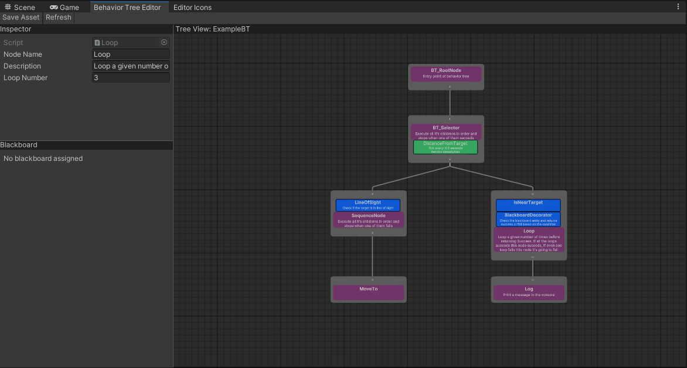

What is a Behavior Tree?
The Behavior Tree it's a system that allow developers to build AI logic and
behaviors in a clean and visual way. In Unity it's an asset called "BehaviorTree
which can be created from the Unity Editor UI.
It is mainly used to create Artificial Intelligence logic for non-player characters
The tree execute from top-left to bottom-right and has 4 types of nodes:
Action, Decorator, Composite and Service.
Each node can be created, placed and inspected in the graph by the user.
User can also create it's own nodes by inheriting from the 1 of the 4 node types, for more
info about how to create your own nodes look at the nodes reference page.
The tree uses a special component called Blackboard to store and access game data at runtime, You can think of it as the brain of the Tree, which contains user-defined keys that hold properties that can be used by the tree to make decisions. For example you could have a Blackboard key called canSeePlayer of boolean type which determines if the controlled AI can see the player or not and use it as a condition to begin or stop the execution of a given branch
